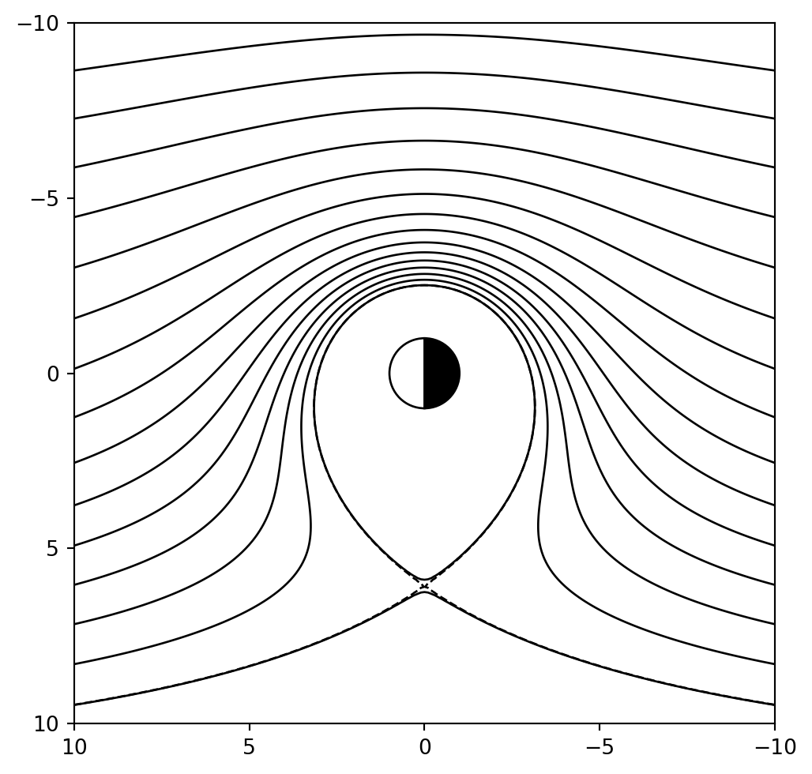

2 単一粒子の運動
2.1 荷電粒子の運動方程式
プラズマのダイナミクスは，電磁場と荷電粒子の作る電荷や電流が自己無撞着に発展することによって記述される．しかし，これは複雑過ぎるので，まずは与えられた電磁場のもとでの非相対論的な荷電粒子の運動について考えよう．運動方程式は以下の通りである． \frac{d\bm{x}}{dt} = \bm{v}, \quad \frac{d\bm{v}}{dt} = \frac{q}{m} \left( \bm{E} + \bm{v} \times \bm{B} \right)
2.2 ジャイロ運動
\bm{E} = 0 および \bm{B} = B \bm{e}_z とすると運動方程式は簡単に解けて，以下の解を得る． \begin{cases} v_x = - v_{\perp} \cos \Omega_c t \\ v_y = + v_{\perp} \sin \Omega_c t \\ v_z = v_{\parallel} \end{cases} \quad \quad \begin{cases} x = - r_g \sin \Omega_c t + x_0 \\ y = - r_g \cos \Omega_c t + y_0 \\ z = v_{\parallel} t + z_0 \end{cases} これより荷電粒子は磁場に対して垂直な面内では旋回運動をすることが分かる（図 2.1 参照）．これをジャイロ運動（もしくはサイクロトロン運動，ラーマー運動）と呼ぶ．ここで，\Omega_c = q B/mをジャイロ周波数，r_g = v_{\perp}/\Omega_cをジャイロ半径である．このとき，\Omega_cは符号付きで定義されていることに注意しよう．
また，ピッチ角\alphaは 図 2.2 に示すように磁力線に平行な速度成分v_{\parallel}と垂直な速度成分v_{\perp}を用いて \tan \alpha = v_{\perp}/v_{\parallel}によって定義される．
演習問題 2.1 磁場強度を B = 10 \, {\rm nT} , エネルギー W_{\perp} = 1 \, {\rm keV} とし，電子および陽子のジャイロ周波数 \Omega_{c} およびジャイロ半径 r_g = v_{\perp}/\Omega_{c} をそれぞれ求めよ．ただし， v_{\perp} = \sqrt{2 q W_{\perp} / m} とする．
第一断熱不変量
一般化座標 (p, q) で定義される力学系において，運動が周期的な場合に以下の積分を定義する． J = \oint p dq このとき，外部からの十分ゆっくりとした摂動に対してはJを近似的に一定とみなすことができる．このようなJを断熱不変量と呼ぶ．
荷電粒子のジャイロ運動について定義される断熱不変量を第一断熱不変量J_1と呼ぶ．これは J_1 = \frac{\pi m}{q} \frac{m v_{\perp}^2}{2 B} \equiv \frac{\pi m}{q} \mu \qquad(2.1) となることが簡単に示せる．ここで \mu を磁気モーメントと呼ぶ．\muはJ_1と定数倍だけしか違わないので，\muを第一断熱不変量と呼ぶことも多い．
演習問題 2.2 調和振動子 \frac{dq}{dt} = p, \quad \frac{dp}{dt} = - \omega^2 q について考える．
- 断熱不変量 J を求めよ．
- 調和振動子の周波数が \omega = \omega(t) のように時間の関数として周期よりも十分ゆっくり変化する場合に断熱不変量 J が保存することを示せ．ここで q(t) = A(t) \exp \left[ \pm i \int^{t} \omega(t') dt' \right] のような解の形(いわゆるWKB近似)を仮定するとよい．
演習問題 2.3 第一断熱不変量が 式 2.1 で与えられることを示せ．
演習問題 2.4 第一断熱不変量 式 2.1 は荷電粒子のジャイロ運動が囲む面積を貫く磁束に比例することを示せ．
演習問題 2.5 一般に電流密度\bm{J}(\bm{x})によって作られる磁気双極子モーメントは \bm{m} = \frac{1}{2} \int_{V} \bm{x}' \times \bm{J} (\bm{x}') d^3 x' と与えられる．ここで積分は全空間での積分を表わす．
これを用いて，v_{\parallel} = 0, v_{\perp} \neq 0の荷電粒子が作るループ状の電流が作る磁気双極子モーメントの大きさが\muに対応している，すなわち |\bm{m}| = \mu = \frac{m v_{\perp}^2}{2 B} であることを示せ．
2.3 バウンス運動
図 2.3 に示すような時間的に定常な「磁気ボトル」形状を考える．

磁気ボトル中の荷電粒子の運動について考えると，時間的に定常な磁場構造の中では荷電粒子のエネルギーは保存することから \frac{1}{2} m v_{\parallel}^2 + \frac{1}{2} m v_{\perp}^2 = \frac{1}{2} m v_{\parallel}^2 + \mu B = {\rm const.} \qquad(2.2) が成り立つ．さらに，(ジャイロ半径) \ll (空間スケール)が成り立つとき，磁力線平行方向の運動方程式は m \frac{d v_{\parallel}}{dt} \approx \underbrace{- \mu \frac{\partial B}{\partial s}}_{\text{磁気ミラー力}} \qquad(2.3) と書ける．ここでsは磁力線に沿って定義した座標である．これは荷電粒子は磁場が強い方から弱い方に向かって実効的な力を受けることを意味しており，これを磁気ミラー力と呼ぶ．
ミラー反射
ピッチ角の大きな粒子は磁場強度の強い領域で磁気ミラー力で反射され捕捉される． ピッチ角と反射点(ミラー点)の磁場強度B_mの関係はエネルギー保存則と第1断熱不変量の保存から \sin \alpha_0 = \sqrt{\frac{B_0}{B_m}} \qquad(2.4) となることが分かる．ただし B_0 は磁場強度が最小の点での値を表す．このピッチ角の条件はエネルギーに依存しないことに注意しよう．
ピッチ角がこれよりも大きい（90度に近い）粒子の運動は磁場強度の極小の点を中心とした周期運動となる．これをバウンス運動と呼ぶ．
第2断熱不変量
バウンス運動に対しても断熱不変量を定義することができる．解析的な表式は具体的な磁場形状に依存するが，ここでは定性的な振る舞いを理解できれば十分である． J_2 = \oint m v_{\parallel} d s \sim m v_{\parallel} l ここで l はミラー点間の距離である．これはミラー点間の距離が十分ゆっくり変化したときの v_{\parallel} の定性的な変化を記述する．
2.4 ドリフト運動
電場ドリフト
一様な電場および磁場中 (\bm{E} = E \bm{e}_y および \bm{B} = B \bm{e}_z) での運動は簡単に解けて \begin{cases} v_x = - v_{\perp} \cos \Omega_c t + \frac{E}{B} \\ v_y = + v_{\perp} \sin \Omega_c t \end{cases} \qquad(2.5) となり，x方向に速さE/Bでドリフト運動する．これを電場ドリフト，または \bm{E} \times \bm{B} ドリフトと呼ぶ．ベクトル形式では \bm{v}_E = \frac{\bm{E} \times \bm{B}}{B^2} となる．粒子軌道の例は 図 2.4 のようになる．
- 電場ドリフトは電荷，質量，エネルギーなどの物理量に依存しない．これは電場ドリフトがローレンツ変換に由来するためである．
- MHDの速度は電場ドリフトに対応する．
演習問題 2.8 式 2.5 を示せ．
一般の力によるドリフト
q \bm{E} の代わりに \bm{F} とすれば \bm{v}_F = \frac{\bm{F} \times \bm{B}}{q B^2} を得る．これは一般に磁場に垂直方向に外力 \bm{F} がかかったときに，荷電粒子は \bm{F} および \bm{B} の両方に直交する方向にドリフト運動することを意味する．
磁場勾配ドリフト
\bm{E} = \bm{0} かつ \bm{B} = B(y) \bm{e}_z (すなわち \nabla B \parallel \hat{e}_y )のような勾配があるとき，粒子は平均的な力 \left< F_x \right> = 0 \quad \quad \left< F_y \right> = - \frac{1}{2} m v_{\perp}^2 \frac{1}{B} \frac{\partial B}{\partial y} = - \mu \frac{\partial B}{\partial y} \qquad(2.6) を感じてドリフト運動する． \bm{v}_{G} = \frac{\mu}{q} \frac{\bm{B} \times \nabla B}{B^2} これを磁場勾配ドリフトと呼ぶ．
演習問題 2.9 式 2.6 を示せ．ただし \bm{E} = \bm{0} とし，磁場勾配の空間スケールは粒子のジャイロ半径よりも十分大きいと仮定せよ．
磁場曲率ドリフト
曲がった磁力線に沿って運動する粒子は遠心力 F_c = - m \frac{v_{\parallel}^2}{R_c} \bm{e}_c を感じる．ここで R_c は曲率半径，\bm{e}_c は曲率中心に向かう単位ベクトル．この力によって粒子はドリフト運動する． \bm{v}_{C} = \frac{m v_{\parallel}^2}{q B} \bm{b} \times (\bm{b} \cdot \nabla) \bm{b} これを磁場曲率ドリフトと呼ぶ．ただし \bm{b} = \bm{B} / B は磁場の単位ベクトルである．

演習問題 2.10 \bm{\kappa} = \frac{\bm{e}_c}{R_c} = (\bm{b} \cdot \nabla) \bm{b} で定義される\bm{\kappa}は磁力線の曲率ベクトルを表わす．このことを確かめよ．
分極ドリフト（慣性ドリフト）
磁場は一様かつ一定とし，空間的に一定の電場がゆっくりと時間変化するとき，運動方程式から \begin{aligned} \frac{\bm{E} \times \bm{B}}{B^2} - \frac{m}{q B^2} \frac{d \bm{v}}{dt} \times B = - \bm{b} \times (\bm{b} \times \bm{v}) = (\bm{I} - \bm{b} \bm{b}) \cdot \bm{v} = \text{速度の垂直成分} \end{aligned} ここで速度を電場ドリフトとジャイロ運動に分解し，ジャイロ周期で平均をとれば \left< \bm{v}_{\perp} \right> = \bm{v}_E - \frac{m}{q B^2} \frac{d \bm{v}_E}{dt} \times B となる．第1項は電場ドリフト．第2項の \bm{v}_P = \frac{m}{qB} \bm{b} \times \frac{d \bm{v}_E}{dt} は分極ドリフトと呼ばれる．
ドリフト運動のまとめ
| 名前 | 実効的な力 | ドリフト速度 | 備考 |
|---|---|---|---|
| 電場ドリフト | q \bm{E} | \frac{\bm{E} \times \bm{B}}{B^2} | 電荷や質量によらない |
| 磁場勾配ドリフト | - \mu \nabla B | \frac{m v_{\perp}^2}{2 q B} \bm{b} \times \nabla \ln B | 垂直エネルギーに比例 |
| 磁場曲率ドリフト | - m v_{\parallel} (\bm{b} \cdot \nabla) \bm{b} | \frac{m v_{\parallel}^2}{q B} \bm{b} \times (\bm{b} \cdot \nabla) \bm{b} | 平行エネルギーに比例 |
| 分極ドリフト | m \frac{d \bm{v}_E}{dt} | \frac{m}{q B} b \times \frac{d \bm{v}_E}{dt} | 質量に比例 |
第3断熱不変量
軸対称な磁場中では粒子の磁場勾配・曲率ドリフトの軌道は閉じるので断熱不変量を定義できる． ジャイロ運動に対して定義された第1断熱不変量は J_1 \propto \pi r_g^2 B であったが，これはジャイロ運動が囲む領域を貫く磁束に対応している． ドリフト運動についても同様にドリフト軌道が囲む領域を貫く磁束 J_3 = \int \bm{B} \cdot d\bm{S} = \int_0^{R} 2 \pi r B_z(r) dr が保存する．これを第3断熱不変量と呼ぶ．ただし R はドリフト軌道の対称軸からの距離である．
2.5 荷電粒子の運動のまとめ
軸対称な磁場のもとでは荷電粒子は 図 2.6 に示すような3つの周期運動をし，それぞれに対して断熱不変量が定義できる．

微小パラメータを \epsilon = r_g/L \ll 1 と定義すると，3つの運動の時間スケールがそれぞれ \epsilon のオーダーだけ異なる．従って第1断熱不変量は最も保存されやすく，逆に第3断熱不変量は最も保存されにくい．
3つの周期運動の地球磁気圏における典型的な時間スケールは 図 2.7 のようになる．

演習問題 2.11 双極子磁場のような軸対称な磁場構造中における十分エネルギーの小さな荷電粒子は，ジャイロ運動，バウンス運動，ドリフト運動，の時間スケールの異なる3つの周期運動をする．粒子のジャイロ半径 r_g と系の典型的な空間スケール L の比を \epsilon = r_g/L (\ll 1) とするとき，3つの周期運動の時間スケール T_\text{gyro}, T_\text{bounce}, T_\text{drift} がそれぞれ，\Omega_c T_\text{gyro} \sim O(1)，\Omega_c T_\text{bounce} \sim O(\epsilon^{-1}), \Omega_c T_\text{drift} \sim O(\epsilon^{-2}) となることを確かめよ．
演習問題 2.12 円筒座標系(r, \phi, z)を用いて，時間定常で軸対称なベクトルポテンシャル A = A_{\phi} \bm{e}_{\phi} = \frac{1}{2} r \left[ 1 + \left(\frac{z}{L}\right)^2 \right] B_0 \bm{e}_{\phi} で与えられる磁場中の荷電粒子の運動について考える．ただし粒子のエネルギーは十分小さく，軌道は r \ll L, \left| z \right| \ll L に限られると仮定してよい．
- このとき荷電粒子の第1断熱不変量\muが保存することを説明せよ．
- \mu = {\rm const.}のとき, r = 0近傍の粒子のz方向の運動の周期を求めよ．
- 十分ゆっくりとLを時間変化させた場合の粒子のエネルギー，速度の変化について議論せよ．
演習問題 2.13 電磁場が B = B(x) \, \bm{e}_z, E = E_0 \, \bm{e}_y で与えられる場合を考える．
- 磁場は一定( B(x) = B = {\rm const.} )と仮定し，電場ドリフトの向きおよび大きさを求めよ．
- 電場がない場合( E_0 = 0) を考え， x = 0 の十分近傍の磁場を以下のように近似する． B(x) \simeq B_0 + \frac{\partial B}{\partial x} \Biggr|_{x=0} x このとき，磁場勾配ドリフトの向きおよび大きさを求めよ．ただしジャイロ半径は勾配のスケール長よりも十分小さいと仮定せよ．
- 初期に x = 0 にあった粒子が電場ドリフトによって x = x_1 まで移動した．この位置での磁場強度を B (x_1) = B_1 とし，第1断熱不変量の保存を仮定することで，粒子の垂直エネルギーの増加分を求めよ．
- 粒子が電場ドリフトで x = 0 から x_1 に移動する間に磁場勾配ドリフトで粒子は電場方向にも移動する．この電場方向への移動に伴う粒子のエネルギーの変化分を求め，前問の答えと一致することを示せ．
2.6 磁気圏物理学への応用
Dungeyの開いた磁気圏モデル
太陽風の磁場（惑星間空間磁場）が南向きのとき
- 地球磁気圏と太陽風の昼側境界(磁気圏界面)に反平行磁場ができる
- 磁気リコネクションが発生
- 地球につながった磁力線が尾部に運ばれる
- 尾部に反平行磁場の領域が形成
- 尾部でも磁気リコネクションが発生
- 地球向きの対流が発生
のように磁気圏全体の巨視的な対流が駆動される．これをDungeyサイクルと呼ぶ．

内部磁気圏における粒子軌道(低エネルギー粒子)
ゼロエネルギーの粒子の赤道面における輸送はE \times Bドリフトで決定される．磁気圏には地球の自転に起因する共回転電場と太陽風の持つ電場の2種類の電場がかかる．E \times Bドリフト速度は \bm{v}_E = \frac{\bm{B} \times \nabla \Phi}{B^2} であり，粒子軌道は静電ポテンシャル \Phi の等高線に等しい．静電ポテンシャルを極座標で書くと \Phi = \Phi_{\rm c} + \Phi_{\rm sw} = - \frac{B_E \Omega_E R_E^3}{r} - r E_0 \sin \phi \qquad(2.7) となり，粒子軌道は 図 2.9 のようになる． 軌道が閉じた領域は地球の電離圏起源のプラズマで満たされており，プラズマ圏と呼ばれる． 典型的なプラズマ圏の大きさは地球半径の数倍程度である．

内部磁気圏における粒子軌道(高エネルギー粒子)
簡単のためピッチ角90度の粒子を考えると，赤道面内での磁場勾配ドリフトと電場ドリフトのみ考慮すればよい．\mu = {\rm const.}として，簡単のため電場を一定だと仮定すると v_{E} \propto \frac{E_0}{B} \propto r^3, \quad v_{G} \propto \mu \frac{1}{B} \frac{\partial B}{\partial r} \propto \frac{1}{r} となり，遠方では電場ドリフトが優勢だが，地球に近いほど磁場勾配ドリフトが優勢になることが分かる． ここで粒子のエネルギー太陽風電場の強さによって，粒子の到達できる限界の位置が決まっていることに注意． 実際に典型的な粒子の軌道を図示したものが 図 2.10 である．
なお，電場ドリフトと磁場勾配ドリフトの和は \bm{v}_E + \bm{v}_G = \frac{\bm{B} \times \nabla \left(q \Phi + \frac{1}{2} m v_{\perp}^2 \right)}{q B^2} のように書けることから，粒子のドリフト軌道に沿って全エネルギー K = \frac{1}{2} m v_{\perp}^2 + q \Phi は保存する．
演習問題 2.15 第一断熱不変量 \mu を保存しながらより磁場の大きい地球近傍に運ばれた粒子のエネルギーは増大することになる．このとき粒子のエネルギー増大（粒子がされた仕事）の起源は何か考えよ．
磁気嵐
太陽風の磁場が継続的に南向きになった場合などには，磁気圏全体に大きな電場（静電ポテンシャル）がかかり，大量のプラズマが磁気圏尾部から地球近傍に運ばれる．この粒子が磁場ドリフトによって地球を取り囲む円環状の大電流（リングカレント）を作り，近地球の宇宙空間に大きな擾乱を発生させる．これを磁気嵐と呼ぶ．
地上での磁場変動\Delta Bとリングカレントプラズマの全エネルギーW_pの間には \frac{\Delta B}{B_E} =- \frac{2}{3} \frac{W_p}{W_B} なる関係がある．これをDessler-Parker-Sckopke関係と呼ぶ．ただし W_B = \int d \phi \int d (\cos \theta) \int_{R_E}^{\infty} r^2 dr \frac{B^2}{2 \mu_0} \qquad(2.8) は双極子磁場のエネルギーを表す．
Dessler-Parker-Sckopke関係を使うと地表面で観測された地磁気変動から宇宙空間に存在するプラズマ（リングカレント）の総エネルギーを概算することができる．
演習問題 2.16 Dessler-Parker-Sckopke関係を示そう．
- 磁気流体力学の運動方程式 \rho \frac{d \bm{v}}{d t} = - \nabla P + \bm{J} \times \bm{B} において，左辺が無視できる（時間定常で流体速度が十分に小さい）場合を考えると，磁場に垂直方向の電流が \bm{J}_{\perp} = \bm{b} \times \frac{\nabla P}{B} で表されることを示せ．
- 地球の磁場を双極子と近似しよう．このとき， 式 2.8 で表される双極子磁場が持つエネルギーを宇宙空間全体( r > R_E )で積分した量が W_B = \frac{4 \pi}{3 \mu_0} B_E^2 R_E^3 と書けることを示せ．ただし B_E は地球表面の赤道面における磁場強度で，双極子磁場は極座標で \bm{B} = - B_E \left( \frac{R_E}{r} \right)^3 \left( 2 \cos \theta \, \bm{e}_r + \sin \theta \, \bm{e}_{\theta} \right) と表される．
- ビオ・サバールの法則を用いてDessler-Parker-Sckopke関係式を示せ．ただし軸対称性およびリングカレントプラズマが赤道面にのみ分布すること，すなわち円筒座標で P(r, \phi, z) = P(r) \delta(z) と表されると仮定してよい．このときリングカレントプラズマの全エネルギー W_P は W_p = \int_{R_E}^{\infty} 2\pi r P(r) dr となる．ここで P はプラズマの圧力であり，地球表面 r = R_E および無限遠方 r = \infty では P = 0 となることを仮定せよ．
- 赤道近傍の地表面で磁気嵐に伴う地磁気変動として\Delta B \sim 300 \textrm{ nT}が観測されたとしよう．このときのリングカレントを担うプラズマの全エネルギーを概算せよ．